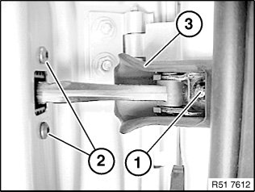
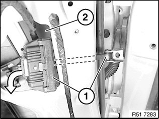
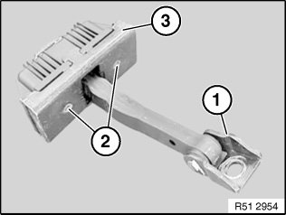

Front Door Limiter: Service and Repair
51 21 280 Removing and installing/replacing door stop on left or right front door

Necessary preliminary tasks:
- Close door windows
- Remove sound insulation in front area

NOTE: Graphics used come from the E87.

NOTE: Secure front door against falling closed.
Release screw (1).
Tightening torque 51 21 3AZ.
Unfasten screws (2).
Tightening torque 51 21 4AZ.
Remove seal (3).
Installation:
Seal (3) must not be damaged.

Remove door retainer (1) via cutout (2).

Installation:
Following parts of door retainer (3) must not be damaged:
1 Hinge
2 Thread